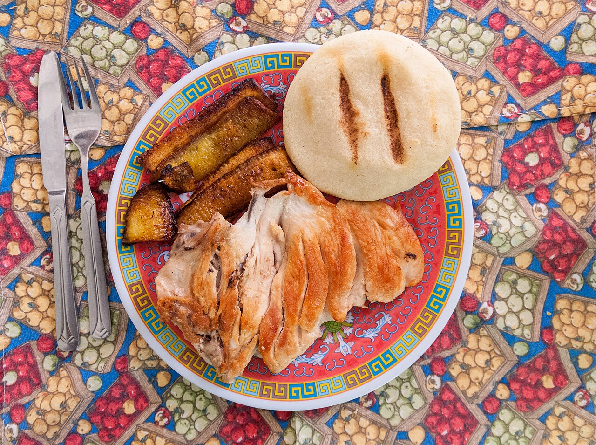
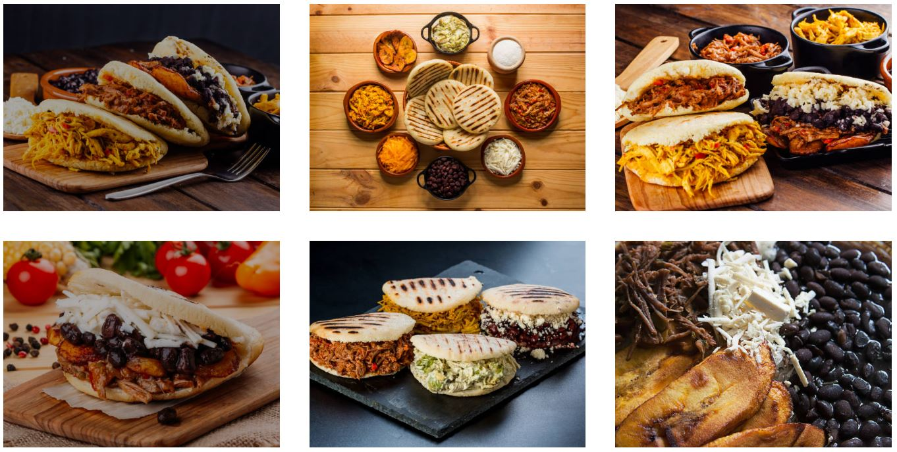
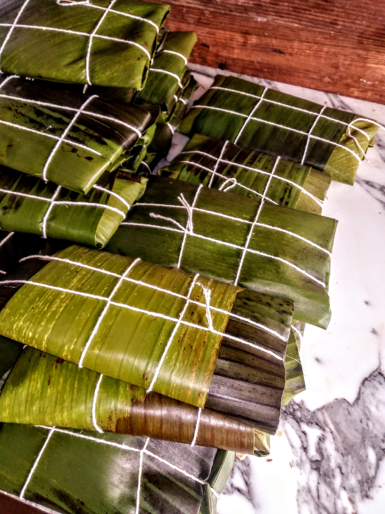
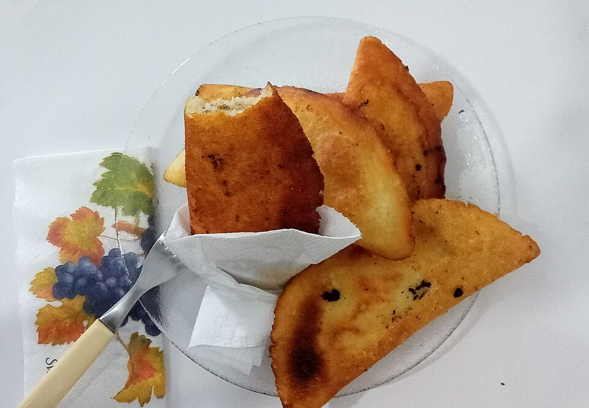
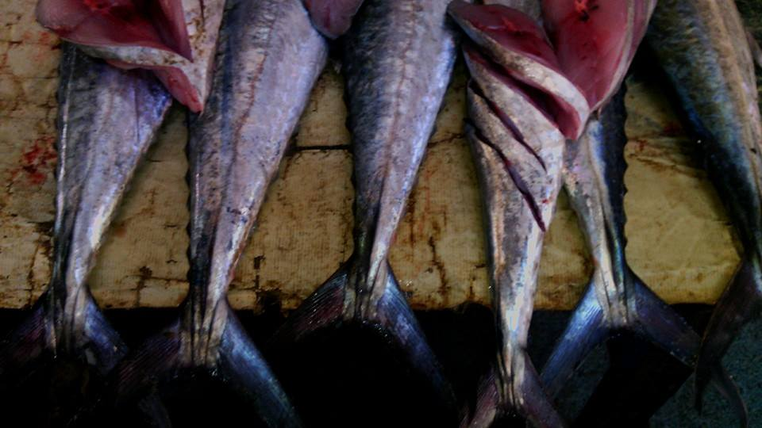
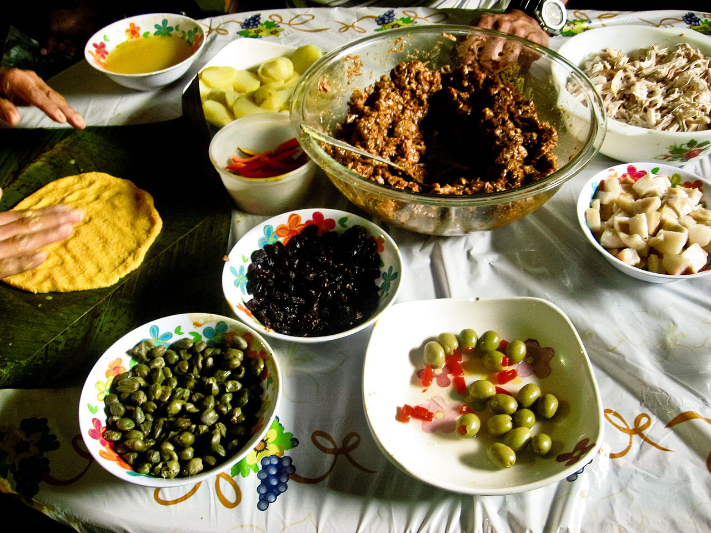

VENEZUELA'S CUISINE
Venezuelan cuisine is a rich and soulful tapestry woven from indigenous, Spanish, and African culinary traditions, shaped by the country's extraordinary geographic diversity. From the corn-based staples of the Andes to the seafood-rich dishes of the Caribbean coast and the hearty meat traditions of the llanero plains, Venezuelan food is generous, vibrant, and deeply connected to the land and people that created it. Every meal in Venezuela is an invitation to understand the culture more deeply.

STAPLE DISHES

The foundation of Venezuelan daily eating rests on a handful of beloved staples that appear on every table across the country. The arepa — a round flatbread made from precooked cornmeal, grilled or fried and stuffed with everything from shredded beef to cheese to avocado — is Venezuela's most iconic food, eaten at breakfast, lunch, and dinner. Pabellón criollo, the national dish, layers shredded black beef, black beans, white rice, and sweet fried plantains into a single perfect plate that tells the entire story of Venezuelan culinary heritage. Cachapas — thick, sweet corn pancakes folded around fresh white cheese — are a beloved street food and home comfort that every visitor must try. Areperas — dedicated arepa restaurants open from early morning until late at night — are found on virtually every street corner across Venezuela and are the best places to try the full range of arepa fillings.
FESTIVE & SEASONAL DISHES

Venezuelan festive cuisine reaches its most glorious expression at Christmas, when families across the country spend days preparing the hallaca — a corn dough parcel stuffed with a rich slow-cooked stew of beef, pork, chicken, olives, capers, and raisins, wrapped in banana leaves and boiled. The hallaca is widely regarded as the soul of Venezuelan Christmas, with each family's recipe a closely guarded secret passed down through generations. Pan de Jamón — a soft bread rolled around ham, olives, and raisins — and slow-roasted pernil pork leg complete the festive table. The weeks leading up to Christmas in Caracas, Maracaibo, and Valencia are the best time to experience Venezuelan festive cuisine at its most abundant, with the Mercado de Chacao in Caracas overflowing with freshly made hallacas from late November through December.
STREET FOOD

Venezuelan street food is an irresistible world of golden-fried corn empanadas stuffed with cheese, shredded beef, or black beans — crispy on the outside and molten with flavor within. Tequeños — long fingers of dough twisted around white cheese and deep-fried to bubbling perfection — are Venezuela's most addictive snack, appearing at every party, gathering, and street corner nationwide. The patacón — a sandwich built inside two flattened and fried green plantains instead of bread, stuffed with shredded beef, cheese, avocado, and fried eggs — is the ultimate Maracaibo street food creation. Across the country, any beachside town will offer freshly fried empanadas de cazón — shark-filled empanadas that are a coastal Venezuelan specialty not to be missed.
COASTAL & SEAFOOD CUISINE

Venezuela's Caribbean coastline delivers a seafood cuisine of extraordinary freshness and bold tropical flavors. Sancocho de pescado — a hearty fish soup simmered with root vegetables, corn, plantain, and fresh herbs — is the soul food of every coastal community. The empanada de cazón — a fried corn pastry filled with seasoned spiced shark meat — is the definitive snack of Venezuela's coastal culture, with regional variations found from Falcón to Sucre. Venezuelan ceviche, dressed with citrus, onion, cilantro, and ají dulce peppers, showcases the country's uniquely sweet and aromatic take on this beloved dish. The coastal town of Puerto La Cruz in Anzoátegui state is Venezuela's seafood capital, with its Paseo Colón waterfront boulevard lined with restaurants serving the freshest fish and shellfish caught daily from the Caribbean.

Come to Venezuela and let its cuisine tell you the story of a nation. Pull apart a freshly made hallaca wrapped in banana leaves, bite into a golden empanada de cazón on a sun-drenched Caribbean beach, or sit down to a full pabellón criollo in a family restaurant where the recipe has not changed in generations. Venezuelan food is not just nourishment — it is memory, identity, and an act of love served on a plate. Come hungry, and leave with a deeper understanding of one of South America's most soulful culinary cultures.